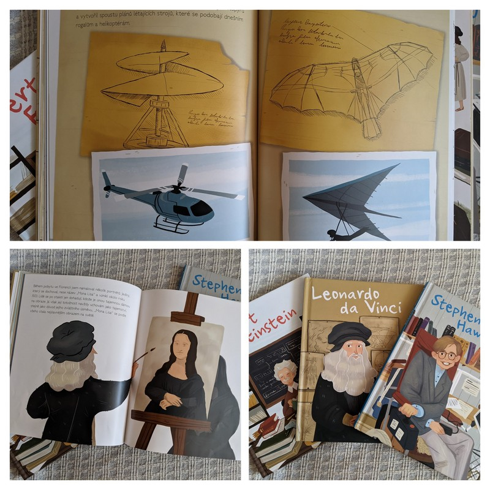
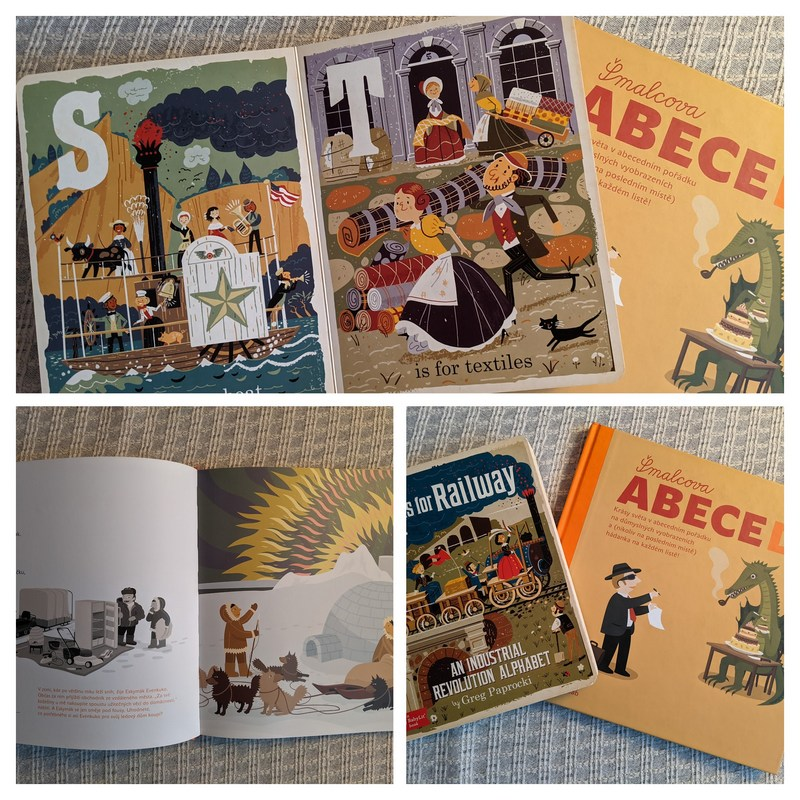
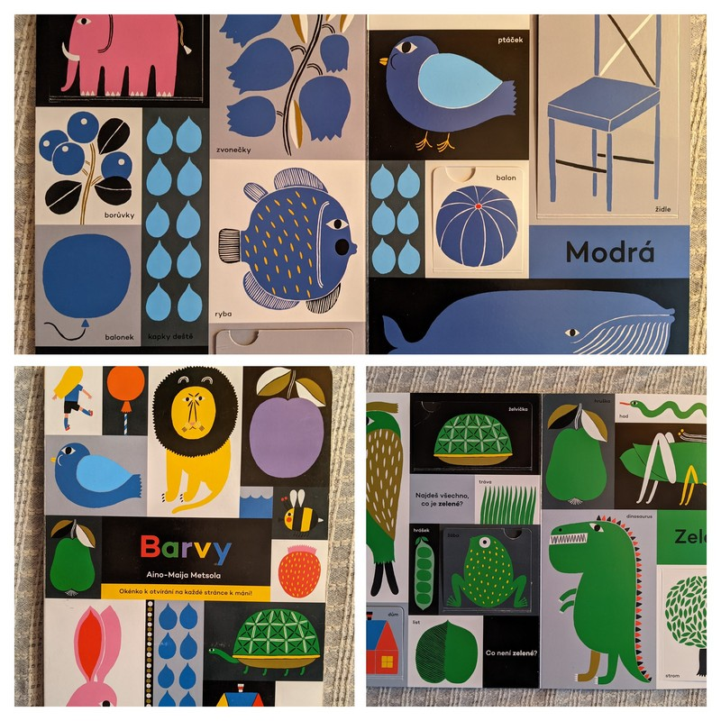
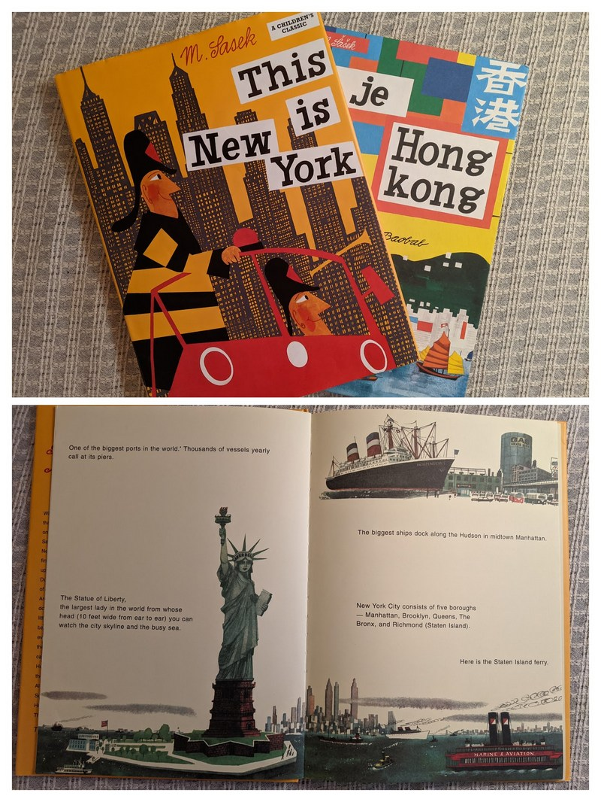
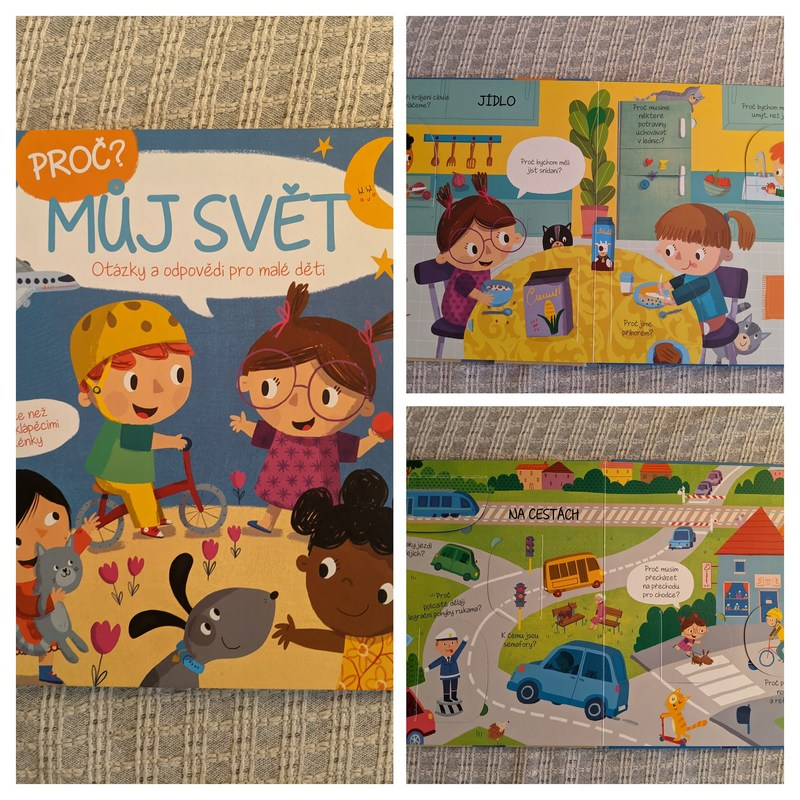

Tenhle článek se chystám sepsat už tak strašně dlouho! Co bych to byla za knihomola, kdybych si nezakládala na domácí knihovničce našeho nejmenšího a pravidelně do ní nepřispívala novými kousky? Olí naštěstí mé nadšení pro věc zdědil a u knížek vydrží sedět skutečně dlouho (což je u našeho jinak neustále aktivního dítěte věc naprosto nevídaná). A já už taky za ty cca dva roky, co ho knihy skutečně zajímají, tak nějak vypozorovala jeho vkus a dokážu odhadnout, co se bude líbit číst nejen mně, ale taky hlavně jemu. A o našich literárních “pokladech” to dnes bude :-)
Na úvod bych ještě chtěla zmínit, že skutečně nepatřím k těm rodičům, u kterých se knihy prohlíží jen “v rukavičkách”. Oli má ke knihám prakticky odjakživa volný přístup, může si je kdykoliv brát a listovat s nimi, čehož hojně využívá. Často s námi také knihy někam cestují a vždycky míváme minimálně jednu v kapsáři v autě pro případ náhlého čekání. Samozřejmě pak podle toho ty knížky i občas vypadají, už teď ale vidím, že v něm tenhle přístup opravdu probudil zájem o čtení - na rozdíl od dětí v našem okolí, které si knížky smí prohlížet jen s rodiči. Určitě ho nenechávám knížky ničit, ale když musím občas nějakou stránku přelepit, nijak mě to nevzrušuje. U nás platí přímá úměra - čím je knížka ohmatanější, tím víc ji Oli miluje :-D!
Stephen Hawking
Leonardo da Vinci
Albert Einstein
Naše oblíbená trojice, kterou odstartovala teta Terezka, od níž jsme dostali první díl o vědci Stephenu Hawkingovi a pak jsme Olimu ke druhým narozeninám dokoupili další dva díly. Knihy zábavnou a inspirující formou vypráví čtenáři o životě tří světově proslulých vědců a seznamují je s objevy, kterými se proslavili. Nebyla jsem si zpočátku jistá, jak moc taková knížka malé dítě zaujme, ale kombinace velkých obrázků s minimem textu zafungovala báječně a Oli si všechny 3 knihy zamiloval ještě dávno před nástupem jeho období fascinace vesmírem :-)

R is for Railway
Šmalcova abeceda
Když se před třetími narozeninami začal Oli zajímat o písmenka, měla jsem hned jasno v tom, jakou knihou jeho zájem podpořím. Šmalcova abeceda je literárním skvostem, který si musí zamilovat dítě i dospělý. Každá dvoustrana je věnována jednomu písmenu. Pro menší děti je zde vždy vtipná básnička, pro starší pak hádanka či úkol a k tomu krásná ilustrace, na níž můžete hledat předměty začínající na dané písmenko. Verš “Babi! V bazénu jsou krabi!” už u nás doma dočista zlidověl :D Máme ji už přes půl roku a stále nás ohromně baví a nalézáme v ní při každém čtení něco nového.
Druhé leporelko přivezl Olimu Péťa z konference v Coloradu, když mu byl sotva rok, takže v té době ho ještě tolik nezaujalo - na učení písmenek je ale také bezva, jen tedy pochopitelně vychází z anglické abecedy :-) Celá kniha je na téma velké průmyslové revoluce, čemuž odpovídají i půvabné ilustrace. Časem si ji O. zamiloval a rád si nechával vyprávět o všem, co se na obrázcích odehrává.

Barvy
Naše zamilovaná, kterou Oli dostal k druhým Vánocům a naučil se díky ní krásně poznávat barvy. Otvírací okénka s krátkými texty a líbivé, ale nekýčovité ilustrace, jsou zárukou úspěchu, a přestože dneska už u nás pro svou jednoduchost není tolik v kurzu, kolem těch dvou let to byla jedna z našich suverénně nejoblíbenějších knížek. (Což je na ní poměrně znát - už je hojně poslepovaná :-) Stejné oblibě se těšila i kniha té samé autorky na téma čísla, o níž jste se tu mohli dočíst v samostatné recenzi.

This is New York
To je Hong Kong
Knihy Miroslava Šaška mám moc ráda a časem třeba naši knihovničku obohatím o další kousky z našich oblíbených destinací :-) Ta o Hong Kongu O. až tak nebere, ale New York, který dostal od tety Shirley, maminky Jennifer, k Vánocům, je opět jednou z našich suverénně nejčtenějších knížek. Oli ji většinou vyžaduje číst v angličtině, občas mu jen česky něco dovysvětlím nebo okomentuju, pokud ho něco víc zaujme. V některých oblastech už je sice knížka dost retro a neaktuální, koneckonců vyšla už v 60. letech, ale i to jí dodává jisté kouzlo a ty krásné ilustrace jsou stejně nestárnoucí :-)

Můj svět (Otázky a odpovědi pro malé děti)
A nakonec jedna “edukační” kniha plná okének s dětskými otázkami na rozličná témata, kterou dostal O. od tety k posledním narozeninám. Rozsah textu vs poměr obrázků je tak akorát pro tříleté dítě, ale zároveň knížka zábavnou formou předá i dost informací.

A tady to pro dnešek asi ukončím. Materiálu by bylo ještě dost, ale zkusím něco nechat i na příště :-) Věřím, že i tak mezi našimi tipy najdete dost inspirace - třeba pro nadcházející Vánoce ;-)